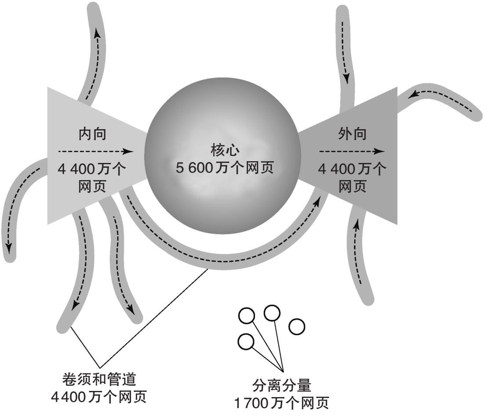
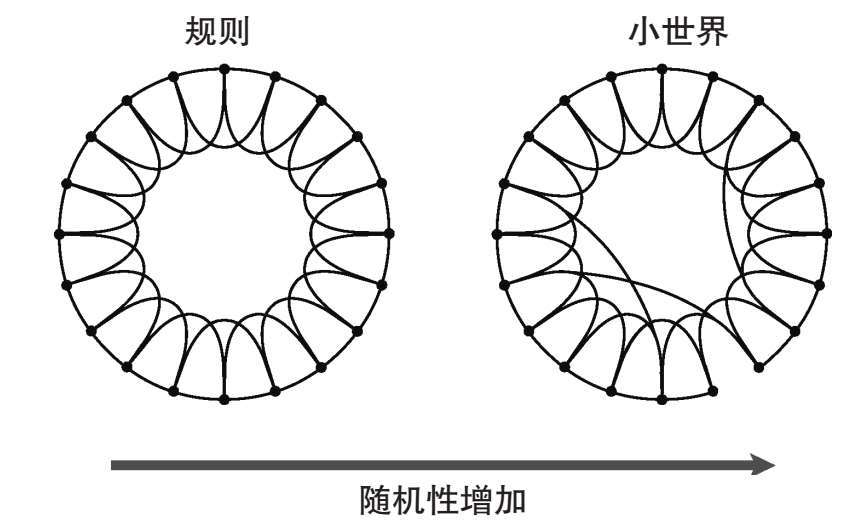

同一个世界
2006年11月4日，德国西北部某地的一根输电线的断开引发了一场影响远及葡萄牙的雪崩式停电。人们以为这种小型断线故障的影响只限于区域层面，或至多限于国家电网范围之内。但电网的集成度已越来越高（目前，它们已在洲际层面形成了一个大型系统），因而也更为脆弱。其他基础设施的情况也一样。例如，几乎所有的机场都是相互关联的：如今，人们从任何起点出发都可以沿着经停点有限的路线抵达几乎任何目的地。互联网也是完全互联的，因为它本就是从更小的网络集成中成长起来的。
自然和社会中的网络可能在局部地区显得极为分散。细胞中的一些化学物质组仅仅在彼此之间相互作用，而不与其他任何物质发生作用。在生态系统中，某些物种群体会建立小型食物网，而与外部物种没有任何联系。而在社会系统中，某些人类群体可能也与其他人完全隔绝。然而，这种分离的群体，或者称分量 ，仅为极少数。在所有网络中，系统内几乎所有组成部分都会参与到一个大型的连接结构之中，这个结构被称为巨型连通分量 。
例如，科学家在基于词汇联想的一个实验中，发现96%的语词止步于某个语词大群体内部。人们可以在这个词群中找到任意两个词语的关联路径，甚至像“火山”与“胃”这样差别巨大的语词之间也有关联：该实验的参与者所绘制的联想链为，“火山”——“夏威夷”——“放松”——“舒适”——“疼痛”——“胃”。一般来说，巨型连通分量在几乎所有网络中都会占到90%-95%的系统比例。我们可以列举这一事实的一些有趣后果。在性关系网络中，过去和当下的性行为能将我们与那些从未想象过或渴望有关系的人联系起来。大型的合作结构会出现在科学家的合作网络中，略去的只是少量孤僻的参与者。在公司的董事会中，连锁董事给予了绝大多数公司某种关联性。最后，在食物网中，某个给定地点的某物种所引入的污染物，会通过食物链而被带到远至地球另一端明显不相关的物种身上。
生活在一个大的相互连接的世界中并不意味着其中的任意两个节点都能够互相抵达。正如对普通道路而言，是否为单行道非常关键，我们也必须知道边是否有向。在有向网络中，从一个节点到另外一个节点存在路径并不保证这条路反向也能行得通。狼吃羊，羊吃草，但草并不吃羊，羊也不吃狼。这种限制在巨型连通分量中创建了某种复杂的架构（图6）。例如，根据1999年的估计，若忽略边的方向，万维网有超过90%的部分由相互连接的页面组成。然而，如果我们将边的方向纳入考虑范围，万维网中彼此能够相互抵达的节点比例仅为24%，这部分构成了所谓的巨型强连通分量 。其余部分则以内向分量 和外向分量 进行划分：前者由那些路径指向巨型强连通分量的页面组成，后者则由那些接收来自巨型强连通分量的连接的节点组成（图形由被称为管道和卷须的小型结构补充完成）。这种特征结构赋予了万维网这个巨型连通分量结构某种“蝴蝶结”的外形特征。这种复杂的结构并非局限于万维网，而是在所有有向网络中都会带着不同的分量出现。

图6 像万维网这样的有向网络会显示出“蝴蝶结”结构：它由中间的巨型强连通分量、内向分量、外向分量以及各种小结构（管道、卷须以及少量分离分量）组成。图中为1999年的数据
巨型连通分量的存在——无论是否具备“蝴蝶结”结构——是一个非常显著的特征。例如，尽管万维网的巨型强连通分量的规模比系统本身的1/3还要小，但它在1999年时仍包含了5 600万个网页。如果网络非常紧密 ，也就是说，如果它们拥有许多冗余连接，多到能够使几乎各节点都互相连接，那么便很容易解释这一特征。但通常情况并非如此。大多数网络反而是稀疏 的，即它们的连接数往往很少。以机场网络为例：每个频繁旅行者的经验都表明，直航并不常有，抵达一些目的地需要经过中转站；活跃的机场数上千，但平均起来，每个城市仅与不到20个其他城市相互连通。大多数网络中的情况也是如此。这一情况可以由节点的平均连接数，即它们的平均度数 体现出来。我们每天都创建许多网页，但每个网页的平均连接数大约为10。无数的路由器接入了互联网，但每个路由器平均只与不到3个其他路由器相连。最后，在超过5万名物理学家的样本中，人们发现合作者的平均数量仅大约为9。在大多数真实世界网络中，可能存在具有多连接的元素（事实上也确实存在），但一般说来，与此相对应的图并不紧密；相反，它们被认为是稀疏 的。
这个令人困惑的矛盾——一个稀疏的网络仍旧可以很好地连接起来——已经吸引了我们在第二章提到的匈牙利数学家保罗·埃尔德什和阿尔弗雷德·雷尼的注意。他们通过生成这些图的不同随机图解开了这个困惑。在每个随机图中，他们都改变了边的密度。他们以非常低的密度为起点：平均每个节点少于一条边。人们自然会期待，随着边的密度的增加，越来越多的节点将会彼此连接。但埃尔德什和雷尼所发现的却是一个相当突然的转变：一些分离分量突然合并为一个大的分量，后者几乎包含了所有节点。突变发生在边达到一个特定的临界密度值时：当每个节点连线的平均数（即平均度数）大于一时，巨型连通分量便会突然出现。这个结果意味着网络展现出某种十分特别的节约特征（这种特征是其无序结构所固有的）：甚至在节点之间随机分布的少量的边，都足以产生能够吸收几乎所有元素的大型结构。
近在咫尺
1994年初，奥尔布赖特学院的三名学生——克雷格·法斯、布莱恩·特特尔、迈克·吉内利——在一场暴风雪天气里看电视。据他们说，他们注意到电视上预告了凯文·贝肯的下一部电影，但他也同时出现在了许多不同的电影中。于是他们开始历数在那些电影中与他合作的大量演员。贝肯有点类似于“娱乐世界的中心”的想法便开始传播，进而变得尽人皆知了，基于此甚至出现了一个网页，即“凯文·贝肯指南”：这个搜索引擎提供了贝肯和人们可能会搜索的任何其他演员之间的关系。值得注意的是，如果人们输入来自早先商业电影中某位西班牙演员的名字，比如帕科·马丁内斯·索里亚，该指南网页就会发现一个十分紧密的联系：马丁内斯与路易斯·因杜尼一起演过《在西班牙度假》（Veraneo en España ）这部电影；后者和伊莱·瓦拉赫一起出演过电影《先开枪，再提问》（Il Bianco, il Giallo e il Nero ）；而瓦拉赫又与凯文·贝肯一起出演过《神秘河》（Mystic River ）。这种与贝肯相关的合作链几乎能在人们所能想到的任何演员身上发现。
这个令人惊讶的特征让人想起一场科学家参与的游戏。随机图专家保罗·埃尔德什乃是20世纪杰出的数学家。科学家们衡量了自己与埃尔德什的合作以作为自己荣誉的象征：那些与他共同撰写过一篇论文的人的埃尔德什数记为1；那些埃尔德什合著者的合著者的埃尔德什数记为2；而埃尔德什合著者的合著者的合著者的埃尔德什数记为3；以此类推。然而，只有最小的埃尔德什数字才是骄傲的真正来源：超过500位科学家乃埃尔德什的直接合著者；而与这些核心的合著者合作过的科学家有几千人。最后，数以万计的人拥有埃尔德什数3（G.C. [4] 就是其中之；M.C.则拥有埃尔德什数4），所以这并非什么特别的荣誉。在一任何领域几乎都没有科学家拥有超过13的埃尔德什数。
完全出乎人们的意料，这些引人注目的结果并非贝肯或埃尔德什特有。前者并非娱乐界的中心人物；后者也并非数学的枢纽。如果在任何其他演员或科学家身上重复同样的计算，也会发现类似的结果：非常短的链条关联着相隔甚远的个体。这一事实为一次十分普通的鸡尾酒会经历 提供了某种有趣的洞见：
当你与一位陌生人聊天的时候，突然发现他或她是你妻子的同学，或者你兄弟的网球搭档，抑或你朋友的邻居，等等。这种发现通常让人们惊呼（“世界真小！”），但可能它并非那般不寻常。
社会系统似乎非常紧密地联系在一起：在一个足够大的陌生人群中，找到一对由十分短的关系链关联起来的人并非不可能。
六度分隔理论
1967年，美国心理学家斯坦利·米尔格拉姆进行了一系列值得铭记的实验。在杰弗里·特拉弗斯的协作下，米尔格拉姆向中西部（堪萨斯州和内布拉斯加州）的一些居民随机寄送了数十封信件。在信中，他请求这些人将信件转发至马萨诸塞州的某人（剑桥 [5] 的神学学生的妻子，或者波士顿的一位股票经纪人），而米尔格拉姆并未提供相关地址。如果这些居民并不认识收件人，米尔格拉姆则建议他们将信件转发至他们所认识的可能由于某种原因而与收件人“相熟”的人。人们在每次转发信件之时，都必须抄送一份给米尔格拉姆，以便他能够追踪信息的传递路径。在拥有数亿人口的国家内，依靠本质上为口口相传的方式找到某人似乎是不可能的。然而，几天后，收件人开始收到原始信件。这些信件仅仅经过了一位中间人。几周之后实验宣告完成，大约1/3的信件已经抵达其目的地：没有一封信件被转发超过10次，而平均邮寄次数为6次。
该实验激发了科学界的热情。1950年代，数学家曼弗雷德·科亨和政治学家伊锡尔·德·索拉·普尔便猜测人类之间的联系可能比预想的更加紧密。他们问道：如果从人群中随机抽取两人，他们认识彼此的概率有多大？通俗地讲，需要多长的相识链条才能将他们相互关联起来？在一篇最终于1978年发表的广为流传的论文中，他们提出了一个数学模型，表明在诸如美国这样的人口规模中，让人意想不到的是有很大一部分人两两之间都可以通过少量的中间人链条而彼此连接。米尔格拉姆的实验则是对此二人直觉的检验。这个发现有很强的甚至超出学术界的影响。六度分隔理论 这个术语中的数字来源于米尔格拉姆的实验发现，并成为其结果的一个通俗的表达。1990年，剧作家约翰·瓜雷将其作为某喜剧的标题，该剧中一个魅力人物躲避人群，并声称自己是演员西德尼·波蒂埃的儿子。以下便是瓜雷表达米尔格拉姆实验结果的方式：
小世界
“爱虫”（Iloveyou ）病毒是史上最具传染性的计算机病毒之一。自2000年5月出现之后，它便感染了世界各地数千万的计算机，造成主要用于清除它的损失达数十亿欧元。“爱虫”病毒以电子邮件的形式传播，它伪装在一个酷似情书的附件中。当附件被打开，病毒便会感染计算机，并将自己转发至该计算机的地址簿中所含的电邮地址中。经过仅仅几次这样的复制，该病毒便感染了大量设备。正如前面某段落所描绘的社交网络一样，人们或许这样谈论病毒传播的计算机网络：“世界真小！”仅仅数次连接便可访问大量计算机。彼此明显相隔甚远的计算机结果仅通过较短的关系链便相互连接。
在现实中，作为米尔格拉姆实验主要结果的这种小世界属性 ，存在于所有网络中。互联网由数十万个路由器组成，但信息包仅通过大约10次“跳跃”便足以从其中一个路由器抵达其他任何一个。两者之间可能相隔数千公里，但距离并不重要：重要的是必经的连接数，而这个数字往往很小。这就是为何信息能以非凡的速度在地球上传播的原因。另外一个例子是万维网：它由数十亿页面构成，但科学家发现，通常20次鼠标点击便足以连接其中任何两个页面。一般而言，在一只秀丽隐杆线虫的大脑中，任何一对神经元之间的距离都少于“三度分隔”。而在连接世界上所有国家的进出口网络中，无法找到被超过两条联系链条分隔的国家。这样的例子在其他很多事例中数不胜数。
小世界属性包含任意两节点之间的平均距离（被测定为关联它们的最短路径）十分小这一事实。给定某网络中的一个节点（比如在合著者网络中的埃尔德什），少数节点与它十分接近（即直接的合著者），与其相隔甚远的仍是少数（即那些持有很大埃尔德什数的科学家）：多数人则位于平均——以及很短——距离之内。这一点适用于所有网络：从一个特定节点开始，几乎所有的节点都仅与其相隔寥寥几步；特定范围内的节点数则随着距离的增加以指数方式快速增加。相同现象的另一种解释方式（科学家们通常的说明方式）如下：即便我们向某个网络中增加了许多节点，平均距离也不会增加太多；人们不得不将网络大小增加几个数量级后，才能注意到通往新节点的路径变长了（一点点）。
小世界属性对许多网络现象至关重要。新皮质中较短的突触距离对其功能可能非常关键：一些研究表明，神经退行性疾病如阿尔茨海默症便说明大脑中的小世界属性大量丢失。而性关系网络中的短程关系则表明，解释性传播疾病中的风险群体这一概念时必须小心翼翼：事实上每个人距离那些被感染者都很近。网络这种有效传播病毒的能力也有其建设性用途。采用病毒式营销 策略的首批案例之一是微软1996年推出的电子邮箱服务（Hotmail）的全球性扩散。购买免费微软电邮地址的人须同意在他们的信件中附加一个链接，该链接允许收件人相应地打开一个免费地址。微软电邮在通信公司中增长最为迅速，它俘获了数千万用户，部分原因在于这个策略巧妙地利用了电子邮件网络的小世界属性。
捷径
小世界属性是网络所固有的。即便完全随机的埃尔德什–雷尼图也表现出这种性质。相比之下，普通的网格并不会展现这一特征。如果互联网是一个棋盘状晶格，则任意两个路由器之间的平均距离将达1 000步的级别，而网络本身也会慢很多：不会有快速的网页浏览，也没有即时的电子邮件。如果科学合作网络是一个网格，则埃尔德什仅会有中等数量的合著者；尽管后者的合作者数量会大些，但规模仍旧适中，以此类推：特定距离内的个体数量不会呈指数级增长，而是慢许多。如果神经网络是一个晶格，则增加神经元的数量（比如，由于大脑的自然发育）将显著增加新皮层内的平均传递距离：矛盾的是，大脑的发育会让人变得不那么聪明（一些年轻读者可能会同意这一点）。
那又是什么使得网络与网格有所不同？网络中表现出的小世界属性为何又在晶格中缺乏？1998年，物理学家邓肯·沃茨和数学家史蒂文·斯托加茨试图回答这些问题。他们以思考十分简单且规则的结构为出发点。这个结构为节点构成的圆形，其中每个节点都与其最近和次近的邻点相连（图7左）。这种结构可能代表了一组偏远的村庄，其中每个村庄都与其邻近村庄交换货物，偶尔也会与邻村的邻村交换。在这种规则的结构中，产品从生产者那里传递至遥远村庄的消费者处可能要很长一段距离。
接着，沃茨和斯托加茨引进一个类似规则使得两个遥远村庄之间开放路径。在实际操作中，他们切掉了原始结构的某条连线，并将其与其他节点重新随机连接。顷刻间，一个村庄的居民便能与之前遥远的地区而非其邻村交换货物了。然而，从整体上看，仅有几个村庄受到了这种变化的影响，圆圈中的一些区域彼此之间仍旧相隔甚远。人们可通过计算重连之后节点之间的平均距离看出这一点：引进新的捷径之后平均距离仅稍微变短。这时，两位科学家开放了更多的“路径”（图7右）。每次重新连接之后，他们都会计算节点之间的平均距离：他们发现，在重新增加仅仅几处连线之后，平均距离明显缩短。少量捷径便足以大大缩短系统中所有元素彼此之间的距离。将连接结构转变为小世界的关键因素便是少量无序的出现。没有哪个真实的网络能呈现出有序的元素排列。相反，其中总存在一些“不合群”的连接。正是由于这些无序连接的存在，网络方为小世界。

图7 在小世界网络模型中，引入无序后规则晶格便转换为网络，相应地，节点之间的距离也缩短了：小世界属性由此产生
这些捷径在某些网络中很容易识别。例如，一1858年第个跨大西洋的电报电缆将欧洲和美国连接了起来。这个长达数千公里、重达数百吨的奇迹是儒勒·凡尔纳的《海底两万里》中潜水艇造访过的海洋奇迹之一。如今，数条跨洋电缆让信息能够在世界范围内即时传递。在语词网络中，一词多义乃捷径的主要来源之一。比如，“pupil”一词连接着两个语义区，一个是“教学”（“pupil”作为“学生”），另一个是“视觉”（“pupil”作为“瞳孔”）。在社交网络中，格兰诺维特的弱连带 概念——将不相关群体连接起来的联系——至少可以与沃茨和斯托加茨的捷径概念部分对应。
捷径在许多其他情况下也是引发小世界属性的原因之一。然而，我们不时也能找到另外可能的解释。例如，世界贸易网络中的超短距离则源于它是少数高度紧密（非稀疏）的网络之一这个事实：一个国家的贸易伙伴平均数量一般可与这个网络里的国家总数相当，这意味着每个国家都与其他大多数国家相互进行贸易。在食物网中，其他机制也能促成小世界属性。基位物种从阳光和周围环境处获得能量和物质，但它们的捕食者通常仅能摄取它们体内资源的10%，而在次第展开的每一步捕食中都是如此：如果食物链太长，顶端的捕食者便无法摄取足以维持其生存的资源。
无论最初怎样，当系统有了某种图形结构之时，小世界属性便成为需要考虑的重要特征。网络方法提供了这种系统的某种醒目景象：首先，系统的元素是某个大世界的一部分，其中几乎每个节点都具有彼此连接的路径；其次，这些路径非常短。这种交织的结构对理解从艾滋病到断电再到信息传播等广泛存在的现象而言至关重要。